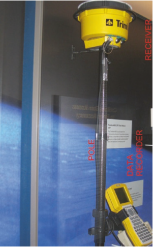

MechanicalDesignProcess <<
Previous Next >> part4
part3
我們的設計都將從產品的想法開始。這些想法需要被驗證,因此,我們將著手構建原型,如果這些原型通過書面規範,我們將通過圖紙記錄我們的設計。我們需要此文檔才能以可重複的方式構建更多產品。本章將讓我們從僅僅對產品的想法出發,一直到以最佳方式構成所有單個物件的最終設計。我們從"空白紙"開始設計,那張紙將充滿物理性質。第一個令人關切的項目是確定紙張是否確實為"空白"或是否存在一些限制。下一個值得關注的項目是確定要包括哪些物理性質。然後,我們應該假設這些性質是基於整體設計目標的最佳配置,因此,我們將以一些詞語來總結我們對該物件配置的選擇。
2.1 起點
設計師的任務是繼續對現有設計進行強化,或者開始全新的設計。讓我們花一點時間看看這些起點的區別是什麼。
- 全新的設計:「清潔圖紙」是對設計師的開始;除了遵守規範之外,它們基本上沒有任何限制。我們將有一整節關於規範的確切內容及其各種元件。
- 延續(或添加)現有設計:這是全新設計的變體,但只能修改現有設計的一小部分。這裏的設計師對全新的設計有許多相同的挑戰,但額外的工作必須利用現有的設計。我們將有一個單獨的章節來定義"系統"在此背景下的確切內容。
- 對現有的設計進行重大修改:同樣,這是全新設計的變體,但在這種情況下,將修改原始設計的很大一部分。這裏的設計師的任務是改變整體設計的一部分,因此比全新的設計有更多的約束。
因此，重要的是要知道當前的設計工作將適合先前所做的工作。我們的“基本佈局”可以在有或沒有工作約束的情況下進行。
2.2 定義設計邊界:系統描述
定義正在設計的"系統"的幾句話:設計可能極其複雜和龐大(如航天飛機或大型客機)、更小的系統(想想汽車),或者更小的系統,如個人電腦、咖啡機或手機。所有這些設計項目的範圍，成本，時間，承諾的資源數量以及與其他設備的接口都不同。設計人員必須牢記正在設計的系統。這一點很重要,原因有很多,其中幾個原因包括:
- 專注於個人責任(工作範圍)
- 了解與該設計交互的其他設備
- 整體"系統"功能(而不僅僅是子系統的功能)
甚至像手機這樣“小”的東西也可以作為大系統的一部分。即，消費者購買的組合可以包含：
- 手機
- 電池充電器
- 電纜
- Sim 卡
- 說明書
- 其他運輸材料(標籤、袋子、氣泡包裝)(我們將限制此處對"系統"的討論,因為您甚至可以想到一個更大的系統,包括手機塔和衛星系統)。我們從系統描述開始,因為大多數電子外殼都環繞和支援產品。有時,可以將一種產品視為較大產品的一部分。例如,網路適配器卡(產品本身)可以放入微電腦(第二個產品),並形成全新的產品,在此示例中,一個可聯網的微電腦。隨著可聯網的微電腦本身構成網路的一部分,情況變得更加複雜,而網路可能是更大的產品。從另一種方式來看,我們可能的任務是只設計一個更大系統的子系統。因此,我們的"系統"可能甚至不是產品,而僅僅是一個更大的"系統"的一部分,該系統已被分解為(時間)可管理的部分。
圖2.1系統說明
例如，我們的任務是設計一個數據記錄器，作為測量系統的一部分。該系統如圖2.1所示。該系統至少由三個主要子系統組成：
- 數據記錄器
- 數據記錄器安裝支架
- 測量桿（標記為“桿”），其中包括另一個子系統，即數據記錄器支架，實際上“系統”包括電纜、運輸容器（盒）和說明手冊（但在此示例中，我們將其忽略）。附帶說明一下，圖2.1中的系統是Trimble Survey系統的照片，該系統出現在華盛頓特區的史密森尼博物館中。我們已成為“測量員系統設計組”的團隊成員，並將設計一部分總體設計（數據記錄器部分）。因此，我們的首要任務是確定（指定）我們到底要設計什麼（在給定的時間內圍繞我們負責的項目建立“圍欄”之類的東西）。要完成此任務，我們將需要一個規範。（請參考第1章有關規範的討論。）
2.3設計過程
2.3.1總體項目開始到項目完成
設計可以以多種方式進行。所有公司在執行整個產品設計過程的方式上都有差異，但是它們確實具有一些共同的特徵。沒有什麼特別的方法是絕對正確的。最終結果（符合規範）是衡量成功的標準。設計通常按以下步驟進行：EPE設計人員將承擔以下任務的“絕大部分”。他們將是許多工作的“執行者”和“推動者”。如果他們自己不做這項工作，那麼他們肯定得對這項工作負責。
1.構思草圖–這是項目的“理想”階段。單詞必須變成這些圖片來表示。一旦想法採用某種形式，就可以輕鬆地對其進行審查和修訂。審核小組中的某些人需要對構想有“了解”才能真正看到所提出的內容。
2.審查想法並授權進行原型製作-此操作將“想法圖片”轉化為團隊可以實際接觸的東西。現在可以以客戶使用產品的方式來拾取，保存和使用草圖形式中看起來不錯的產品；原型是一張完整的三維圖片。“進行授權”很重要，因為這些項目通常在時間和金錢上受到限制，因此這些支出必須由團隊同意。步驟3和4（如下）實際創建出原型。
3.原型製作的想法圖（文件創建）–通常，將草圖轉換為數字化的圖文件，從而可以進行設計。（設計現在位於修訂版1。）包含斜體字，以表示正式文檔的“修訂級別”，第12章中對此進行了進一步擴展。
4.原型製造（物理零件）–項目團隊將確定製造原型的成本和時間限制。有時候，只需要一個“快速而粗糙的”原型即可取得良好的進展。有時需要按照嚴格的規格來構造原型。EPE設計人員應該對開發階段需要什麼有很好的認識。
5.原型分析和測試–團隊收到原型後，將對其進行測試以查看原型是否符合規範。項目團隊僅需要確定進行哪些測試，以決定測試之後如何進行。
6.審查原型和測試結果–測試結果由團隊審查，並提出修訂建議。（假設版本1需要改進，我們將設計修訂為版本2。）
7.進行更改以改進原型（圖紙和原型）–這是迭代過程的開始，最終將使設計符合產品規格。
8.對版本2的進一步分析和測試（假設版本2符合產品規格。）
9.產生最終文件/最終測試/最終審查
10.正式批准生產發布的設計
請注意，上述過程中的“生產下達”允許生產“一定數量”的單元是生產並出售給客戶，或用作更多單元以用於更廣泛的測試程序。公司在為客戶發布和測試產品的過程上可以有多種方式的差異。另請注意，大多數項目的修訂版將比所示的兩個修訂版多很多，但是該項目通常會如所示進行。
2.3.2 EPE設計器的開始注意事項
沒有任何“絕對正確”的方式可以進行EPE設計器的設計。每種情況都有其獨特的最佳方法，以使可見的所需進度成為可能。有時，幾天之內就可以放在一起的原型可以為市場帶來令人難以置信的新產品突破。在其他情況下，最好的方法是採用系統的方法來提出一些可能的解決方案，而這些解決方案需要花費數月的時間才能完成。話雖如此，以下概述至少應該作為起點並對設計有用。
1.確定與負載不直接相關的解決方案用途和要求。這些要求中一些更重要的是：
（a）環境–產品將在哪裡使用？例如辦公室/室外/高空/車輛上。
（b）溫度–環境的極端溫度是多少？
（c）預期壽命–一次使用，多年保修，服務？
（d）成本要求–始終是重要的考慮因素。絕對將取決於生產的單元數量和工裝預算。
（e）加工要求–外觀細節可能會大大影響成本。
（f）尺寸和重量限制–當前行業解決方案的局限性是什麼？影響設計師選擇的材料/製造技術。
（g）安全和法規要求–產品故障的影響是什麼？以上所有這些都是EPE設計器設計之初要考慮的重要考慮因素。例如，室內與室外環境會產生不同的設計。與預期使用“一次”的設計相比，需要經過1000次使用後的設計產生了不同的設計。成本低於5美元的設計與成本低於100美元的設計產生了不同的設計。通過遍歷以上每個元素，EPE設計人員可以確定一些初始約束。
2.根據可能需要單個構件（和組件）承受的所有各種可能類型的載荷來確定或估算工作載荷。有必要考慮所有可能的載荷組合，並在可能的情況下確定載荷與時間之間的關係。一些可能的載荷類型為：
（a）靜態
（b）穩態動態（振動）
（c）瞬態動態
（d）衝擊或撞擊
（e）身體接觸，例如點載荷或摩擦力
（f）其他載荷，例如熱/重力/聲學載荷上述載荷確定對於EPE設計者的設計也是非常重要的考慮因素。例如，10磅靜態負載與100磅靜態負載產生了不同的設計。如果這些負載隨時間變化，這將導致不同的設計解決方案。確定負載的大小和類型將直接確定支撐電氣組件所需的材料和橫截面形狀。
3.確定故障機制。變形是由於軸向，剪切，彎曲或扭轉載荷而發生的。可能的失效模式為：
（a）總體屈服（整體非彈性行為）
（b）破裂或斷裂
（c）突然–由脆性材料上的靜態或動態載荷引起
（d）緩慢–由延性材料上的靜態載荷引起
（e）漸進式–由反复的載荷引起（疲勞）
（f）過度變形
（g）屈曲
（h）蠕變–在恆定應力下變形
（i）鬆弛–在恆定應變下改變應力
（j）磨損（磨損）
（k）腐蝕
EPE設計人員確定他們的設計將如何失敗（在當前設計狀態下），有可能修改該設計以防止失敗。測試還將揭示一些故障機制。然而，如果在測試之前可以考慮其中一些故障機制，則可以節省很多開發成本。總結以上三項，通過確定設計的用例，負載和潛在的故障機制，EPE設計人員可以在紮實的基礎上進行設計。
2.4 最佳物件放置
大多數設計都可以認為是物體在空間的物理放置。對像是整個程式集的單獨部分。某些單獨的部件是完全已知的(它們要麼從另一家公司的貨架上購買,要麼重複使用以前在內部設計的部件)。除了"已知"零件外,其他部件還需要全新設計。這些新部件可在內部生產,也可以完全指定由另一家公司生產。電子包裝設計主要包括將子系統安排到最有效的排列中。決定這種安排的第一步是查看子系統的單獨卷。這些卷,以及它們之間清除所需的"間隙",通常會設置"外部邊界",因此,在很大程度上設置產品的總體尺寸。有時,設計人員首先採用的標準是產品的整體尺寸。從這裏,他們必須決定它們能否在給定的總體大小內容納所有要求的內容。也就是說,我們的子系統可能確實需要收縮以適應這個給定的總體規模。基本設計過程的一個方面如圖2.2所示。這顯示了一個物體(在太空中)與外殼(顯示為"牆")的距離。我想開始討論電子外殼的設計,描述幾個設計"場景"。討論的大部分內容都是針對 2D(平面視圖,從上面)的情況,但很容易擴展為包括 3D(側視圖或 Z 方向),我將展示第三視圖的一些示例:基本物件/牆間隙:圖 2.2 顯示了物件和牆。"物件"可以被視為任何內容。例如,它可以是印刷電路板元件、汽車發動機或任何電子元件。"牆"可視為表面外的外殼或所設計物品的外部。在幾乎每一個設計中,設計師都必須確定"物件"和"牆"之間的距離(間隙)。這裡的想法可以擴展到確定物件 1 和物件 2 之間的距離。這些確定的間隙都不需要彼此相同。X 方向中的間隙可能不同於 Y 方向中的間隙,後者也可能與 Z 方向中的間隙不同。
2.4.1間隙距離
1.物體和牆壁的公差：如果要保持特定的距離（例如，假設為0.100英寸）和標稱的整體（外部）尺寸，則設計必須考慮以下因素：•最厚的牆壁在其極限處公差•最大可能的物體（在物體公差的最高極限處）請注意，最厚的壁和最大的物體都減小了0.100英寸的標稱間隙距離。（還請注意，最薄的壁和最小的物體都可以增加0.100英寸的標稱間隙距離。）•必須考慮將物體固定在盒子上。也就是說，緊固系統將允許物體在多大程度上靠近牆壁？假設對像上有一個簡單的安裝孔，盒子上有一個螺紋凸台。物體上的孔（比）要大一些（用於將物體固定到盒子的螺紋凸台中的螺釘）。因此，如果緊固件位於通孔的一側邊緣，則物體可能會更靠近牆壁。還必須考慮盒形螺紋凸台位置的位置公差（相對於盒壁），因為凸台實際上可能更靠近壁（由於製造公差）。通常，可以忽略此“緊固公差”，但某些間隙在有限的緊湊空間設計中，這可能很關鍵。因此，對於到目前為止的間隙示例，僅考慮公差，我們可以具有以下公差：•壁厚可以厚0.005英寸。（在“受限”的整體尺寸下，所有這些都會增加盒子內部的壁厚）。•物體本身（將孔安裝到物體邊緣）可能處於最大位置公差；這可能是0.010英寸。
- 由於其位置公差，盒子中的安裝凸台可能更靠近牆壁。這可能是0.005英寸。•安裝孔可能比（最小）緊固件直徑大0.010英寸，從而允許額外移動0.005英寸。以上所有（4）公差都加到0.005 + 0.010 + 0.005 + 0.005，總計為0.025英寸。
MechanicalDesignProcess << Previous Next >> part4